Справочник по Git и GitHub · модуль 4 · GitHub: аккаунт и связь с ним
Глава 4.4
Публикация, push,
pull, fetch и Sync
В главе разобраны первая публикация ветки, отправка коммитов и получение чужих изменений. Действия показаны кнопками VS Code, а их результат проверен по графу и файлам.
- Категория
- Обмен коммитами
- До начала
- Коммиты и ветки из модулей 2–3
- Что получится
- Опубликованная ветка и проверенный обмен изменениями
- Время
- Около 45 минут с практикой
Суть за две минуты
Push отправляет коммиты выбранной ветки. Fetch получает коммиты и обновляет сведения об удалённых ветках, но не включает их в текущую локальную ветку. Pull получает изменения и включает их в текущую ветку.
Sync Changes объединяет получение и отправку: сначала pull, затем отправка исходящих коммитов. Ни одна из этих кнопок не заменяет создание коммита.
01 Два репозитория и три имени ветки
Сохранение файла и создание коммита происходят на вашем компьютере. Пока мы не отправили коммит, GitHub его не получил. Даже открытая страница репозитория в браузере не связывает локальную историю с сервером автоматически.
Локальный репозиторий — репозиторий на вашем компьютере: его история и служебные данные находятся в .git. Рядом расположена рабочая папка с файлами, которые вы редактируете. Удалённый репозиторий — другой репозиторий, с которым мы обмениваемся коммитами. Обычно он находится на GitHub, но Git допускает и адрес папки на том же компьютере.
Чтобы не вводить длинный адрес при каждом обмене, Git хранит его под коротким именем. Такая запись называется remote. Для remote часто выбирают имя origin. Само имя ничего не говорит о сервере или названии ветки. После клонирования Git обычно создаёт remote с этим именем сам.
Что показано на настоящих кадрах. Опыты главы выполнены в отдельном VS Code на macOS. Наша рабочая копия называется alice, копия коллеги — bob. Общий remote.git — bare-репозиторий: он хранит историю без рабочей папки. Все три находятся в локальном стенде /private/tmp/gh47/lab.
Здесь проверяется поведение Git и кнопок VS Code, не подключение к GitHub. Внешний репозиторий для опытов не создавался. Кадры можно открыть нажатием и рассмотреть крупнее; названия кнопок в другой версии или локализации могут отличаться.
У одной линии разработки теперь есть три обозначения. Два мы видим в локальном репозитории, третье относится к удалённой стороне.
alice. В неё мы делаем коммиты и включаем полученные изменения.main у origin. Это не живой просмотр сервера.А в самом remote.git есть своя ветка main. Если коллега отправит туда коммит, её указатель переместится сразу. Наш origin/main останется прежним до следующего обмена, который обновит сведения.
Расположение этих имён показано ниже. После настройки связи origin хранит адрес второго репозитория; origin/main хранится в нашем .git.
Наш компьютер · alice/.git
main — наша веткаorigin/main — последняя полученная ссылкаorigin хранит адрес /private/tmp/gh47/lab/remote.git.
Другая сторона · remote.git
main — ветка общего репозиторияВ стенде это отдельная папка. В работе её место может занимать репозиторий на GitHub.
Чтобы обмен заработал, нужно добавить адрес и впервые отправить ветку. При этой отправке также настраивается связь веток.
По-простому: история и последняя полученная сводка
У вас есть свой экземпляр документа, у коллег — общий. Рядом лежит запись: «когда я проверял, общий экземпляр был таким». Свой документ — это main, запись о последней проверке — origin/main, общий экземпляр — ветка main в удалённом репозитории.
Fetch обновляет сводку и приносит недостающую историю, но ещё не переносит её в вашу ветку. Ограничение аналогии: Git передаёт объекты истории и меняет ссылки. Обмен не сводится к пересылке одного редактируемого документа.
Начнём с публикации: у нас пока только локальная история.
02 Первая публикация и upstream
Зачем этот шаг: указать место отправки и связать локальную ветку с веткой на другой стороне.
В alice уже создан первый коммит 45613e9 — «Добавить описание проекта». В нём один файл README.md. Удалённый репозиторий пока пуст, а локальная ветка ещё не опубликована. VS Code показывает Publish Branch.
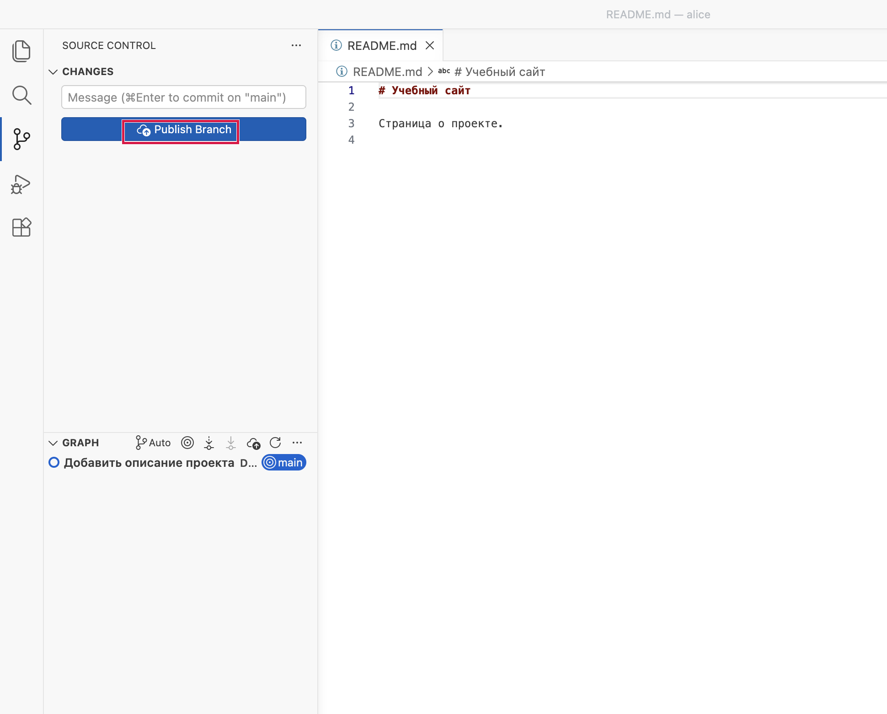
origin/main. Кадр снят до нажатия Publish Branch; адрес origin к этому моменту уже добавлен.Первая публикация — это не то же самое, что создание репозитория на сайте. Возможны два исходных состояния.
- Репозитория на GitHub ещё нет. В Source Control выберите Publish to GitHub — в некоторых состояниях вход к этому действию начинается с Publish Branch. Проверьте аккаунт, имя и видимость создаваемого репозитория. Не публикуйте секреты и личные файлы. Вход и доступы разобраны в главе 4.2. Это внешний шаг: в нашем локальном опыте он не выполнялся.
- Пустой удалённый репозиторий уже есть. В палитре команд VS Code выберите Git: Add Remote…, вставьте его адрес, затем задайте имя
origin. После этого нажмите Publish Branch для текущей ветки. При нескольких remotes внимательно выберите нужный.
В стенде используем второй вариант. Вместо URL GitHub вводим путь к собственному пустому bare-репозиторию. На кадре вводится адрес для настройки remote. Отправки на этом шаге ещё нет.
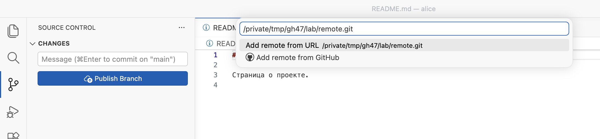
origin. Пока мы только добавляем настройку связи.git remote add origin /private/tmp/gh47/lab/remote.git. Первая публикация ветки: git push -u origin main. Набирать их после действий в интерфейсе не нужно.При публикации Git отправил коммит и создал на другой стороне ветку main. Параметр -u дополнительно сохранил upstream — связь локальной ветки с отслеживаемой удалённой веткой. В нашем случае локальная main отслеживает origin/main. Теперь для обычного Push и Pull не нужно каждый раз выбирать адрес и ветку.
На схеме пунктир означает коммит, которого до отправки не было на принимающей стороне. Стрелка показывает передачу истории; нижняя строка в каждом блоке — результат.
Локально · alice
mainПосле: origin/main → 45613e9
Удалённо · remote.git
До: ветки main нетПосле: main → 45613e9
После завершения операции метки main и origin/main стоят у одного коммита. Вместо Publish Branch — обычная кнопка Commit; исходящих изменений нет.
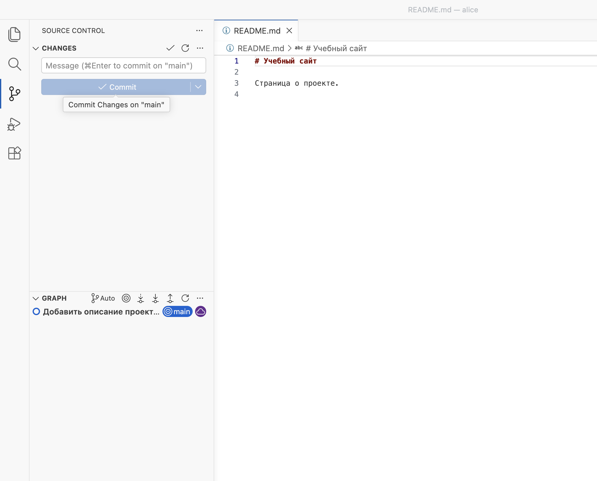

Если история на GitHub уже началась
Репозиторий с добавленным на сайте README уже не пуст. Не добавляйте к нему независимую локальную историю наугад. Для нового рабочего места проще клонировать существующий репозиторий и продолжить его историю — как в главе 2.2. Если обе стороны уже содержат вашу работу, остановитесь и разберите состояние веток. При независимой истории этот сценарий первой публикации не подходит.
Наличие remote ещё не означает наличие upstream. Первая запись задаёт адрес репозитория, вторая — с какой веткой сопоставлять конкретную локальную ветку. Проверка связи в терминале, если нужна: git branch -vv; в нашем опыте вывод содержит main … [origin/main].
Связь настроена. Теперь проверим отправку следующего коммита вместе с незавершёнными правками в рабочей папке.
03 Push: что уедет, а что останется
Зачем этот шаг: отправить готовую часть работы, не перепутав коммиты с незавершёнными правками.
Добавим в README строку «Связь с удалённым репозиторием настроена» и создадим коммит ed46543 — «Уточнить описание проекта». Затем оставим ещё три незавершённые правки: одну строку README добавим в индекс, следующую оставим вне индекса, а новый draft.txt вообще не добавим в Git.
Перед отправкой в Graph виден один исходящий коммит — Outgoing Changes. Вверху одновременно есть Staged Changes и Changes. Счётчик 1↑ внизу относится к коммитам для отправки. Изменённые файлы посчитаны отдельно в группах выше.
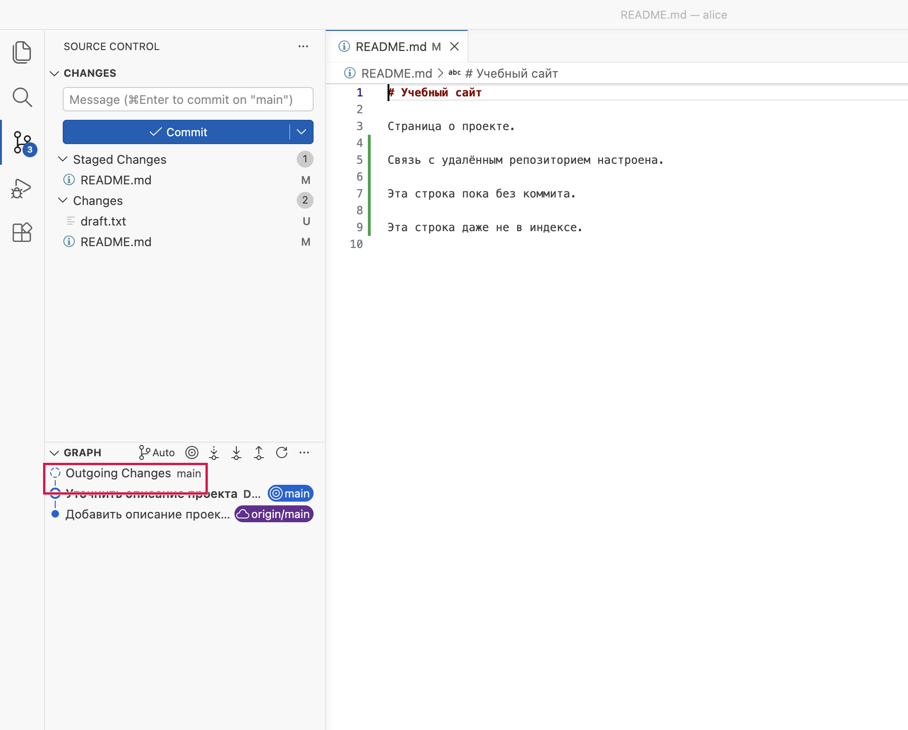
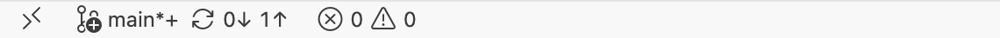
main → ed46543, origin/main → 45613e9. Значок Source Control показывает три записи правок: README учтён отдельно в индексе и в рабочей папке.Push передаёт в удалённый репозиторий необходимые объекты истории и предлагает обновить выбранную удалённую ветку. В обычной работе это означает отправку коммитов, которых на другой стороне ещё нет. Push не создаёт коммит из текущего содержимого редактора или индекса.
В блоке Graph нажмите значок Push со стрелкой вверх. Если подпись не видна, наведите на значок и прочитайте подсказку. Другой путь — палитра команд → Git: Push. Для проверки отправки используем отдельный Push. Большую кнопку Sync Changes пока оставим.
git push origin main:main. Здесь слева от двоеточия локальная ветка, справа — ветка назначения. При настроенной связи обычный git push также может выбрать эту пару автоматически.В момент отправки у нас есть две последовательные версии истории. На удалённой стороне появится только новый коммит ed46543; содержимое незакоммиченных файлов в эту передачу не входит.
Локально · alice
main → ed46543Остаются здесь: индекс README, правка README вне индекса, draft.txt.
Удалённо · remote.git
До: main → 45613e9После: main → ed46543
origin/main после успешного push тоже указывает на ed46543. Направление стрелки между хешами здесь — порядок создания коммитов, слева направо.После Push исходящий коммит исчез из отдельной группы Graph. Обе группы правок остались на месте: они ещё не включены в коммит.
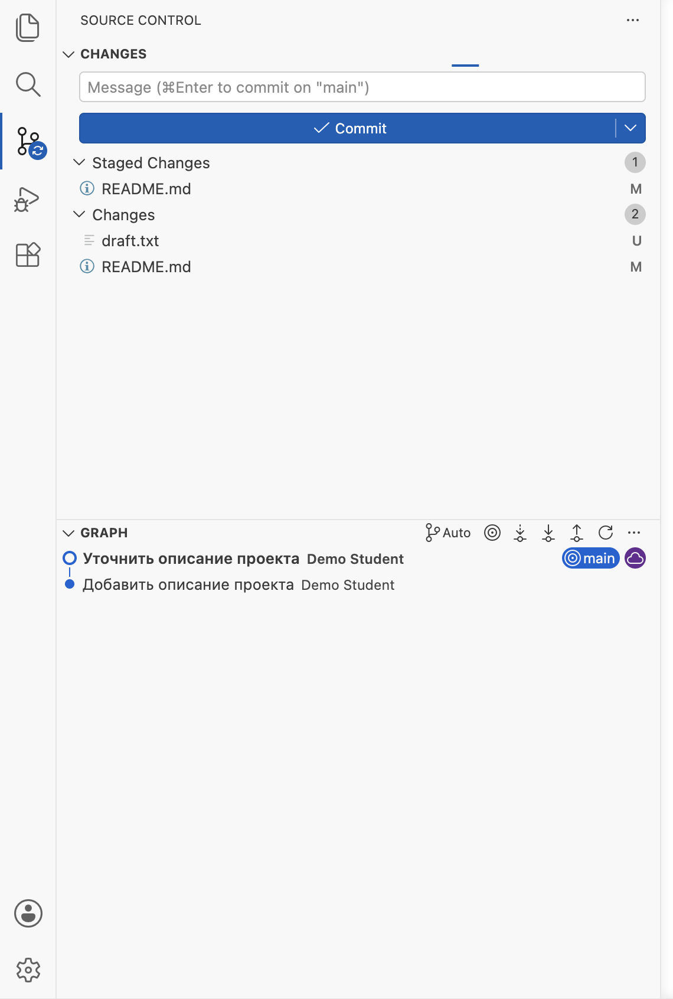
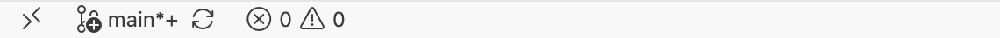
ed46543. Push не очистил индекс и не удалил рабочие правки.Проверка удалённого README показала строку из ed46543, но не две последующие строки. Файла draft.txt там нет. И сохранённый, и добавленный в индекс файл остаётся локальным, пока его изменение не вошло в отправленный коммит.
Что ещё не публикуется вместе с веткой
Обычный push выбранной ветки не отправляет все остальные локальные ветки, локальные настройки Git, хуки и stash. Теги имеют свои правила отправки; не рассчитывайте, что любой локальный тег автоматически уедет вместе с коммитом. Несохранённый текст редактора тем более не входит в историю.
Если секрет попал в коммит, его удаление следующим коммитом не очищает прошлую историю. Вместе с историей Push может передать и старое содержимое файла.
Наш коммит опубликован. Следующий опыт начнётся с нового коммита на стороне коллеги.
04 Fetch: узнать, не включая в ветку
Зачем этот шаг: увидеть чужие коммиты до того, как они изменят нашу ветку и рабочие файлы.
Коллега в bob получил опубликованную историю, добавил news.txt со строкой «Понедельник: занятие по Git» и отправил коммит 8ac8f46 — «Добавить новость о занятии». В удалённой main он уже есть. У нас пока main и origin/main указывают на ed46543.
Отсутствие числа у стрелки вниз ещё ничего не доказывает: локальные сведения могли устареть. В Graph нажмите Fetch From All Remotes. В нашем стенде remote только один — origin. Также можно выбрать Git: Fetch в палитре команд и, если предложено, указать remote.
git fetch --all — обновление из всех настроенных remotes. Для одного origin соответствует задаче git fetch origin.Fetch получает недостающие объекты и обновляет локальные ссылки на удалённые ветки. Он не включает полученную историю в текущую локальную ветку и не переписывает её рабочие файлы. Поэтому после Fetch мы можем увидеть новый коммит в Graph, хотя его файла ещё нет в рабочей папке.
Удалённо · remote.git
main → 8ac8f46news.txt есть в этой истории.
Локально · alice
main → ed46543 · без измененийnews.txt в рабочей папке ещё нет.
45613e9. В локальной базе коммит уже доступен для просмотра, но локальный указатель main не сдвинулся.После нажатия в Graph появилась группа Incoming Changes, а счётчик стал 1↓ 0↑. Наши незакоммиченные правки тоже остались — Fetch их не трогал.
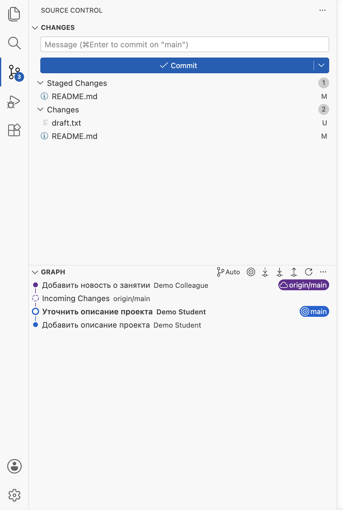
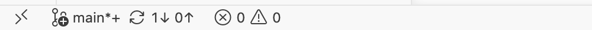
main → ed46543, origin/main → 8ac8f46. Проверка рабочей папки: news.txt отсутствует; README и индекс остались прежними.Фоновый Fetch и кнопка Refresh — не одно и то же
VS Code может предложить периодический Fetch. Если он включён, входящие коммиты появляются без отдельного нажатия — но всё ещё без включения в вашу ветку. В опыте автоматический Fetch выключен, чтобы момент получения был виден.
Refresh перечитывает состояние репозитория для интерфейса. Не используйте его как замену Fetch: локальное обновление панели само по себе не проверяет удалённую историю.
Коммит коллеги уже доступен для просмотра в графе. Чтобы его файл появился в рабочей папке, включим этот коммит в свою ветку.
05 Pull: получить и включить
Зачем этот шаг: включить коммиты коллеги в свою ветку и получить их файлы.
Перед изменением текущей ветки сохраните файлы и проверьте Source Control. Незакоммиченные изменения лучше сначала осмысленно завершить коммитом либо отложить; не нажимайте Discard ради «чистого экрана». В стенде пробные правки предыдущего опыта сохранены в отдельный локальный stash вместе с draft.txt. На следующих кадрах рабочая папка и индекс чистые.
Проверьте имя текущей ветки внизу слева: main. Затем в Graph нажмите стрелку вниз Pull, либо выберите Git: Pull в палитре команд. Не нажимайте большую Sync Changes, если сейчас хотите выполнить только получение.
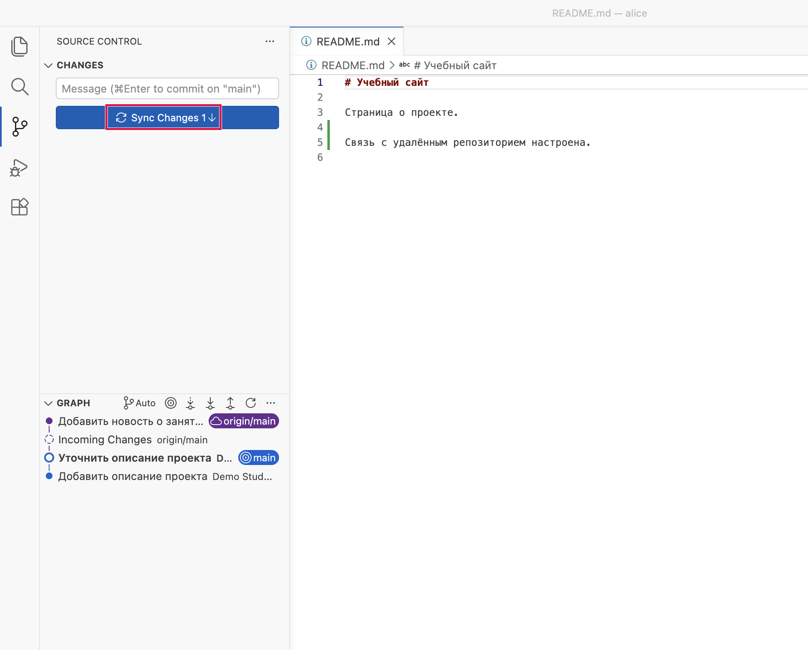

8ac8f46.Pull сначала получает удалённую историю, а затем включает её в текущую ветку. Отдельный Fetch перед ним не обязателен: мы выполнили его в предыдущем разделе, чтобы разделить два механизма и увидеть промежуточное состояние.
git pull --tags origin main. На уровне обычной задачи — git pull с уже настроенным upstream. Дополнительный --tags относится к получению тегов; он не означает отправку тегов.В этом опыте наша ветка не содержит собственных новых коммитов. Поэтому Git передвигает main вперёд по уже существующей линии — это fast-forward, знакомый по слиянию веток. Нового коммита слияния не возникает.
Локально · до
main → ed46543Файла news.txt ещё нет.
Локально · после
main → 8ac8f46В рабочей папке появился news.txt.
main при Pull не меняется: ей ничего не отправляли.После завершения откройте news.txt через Explorer. В нём появилась строка коллеги. Incoming Changes исчезли, а обе метки веток совпали на коммите «Добавить новость о занятии».
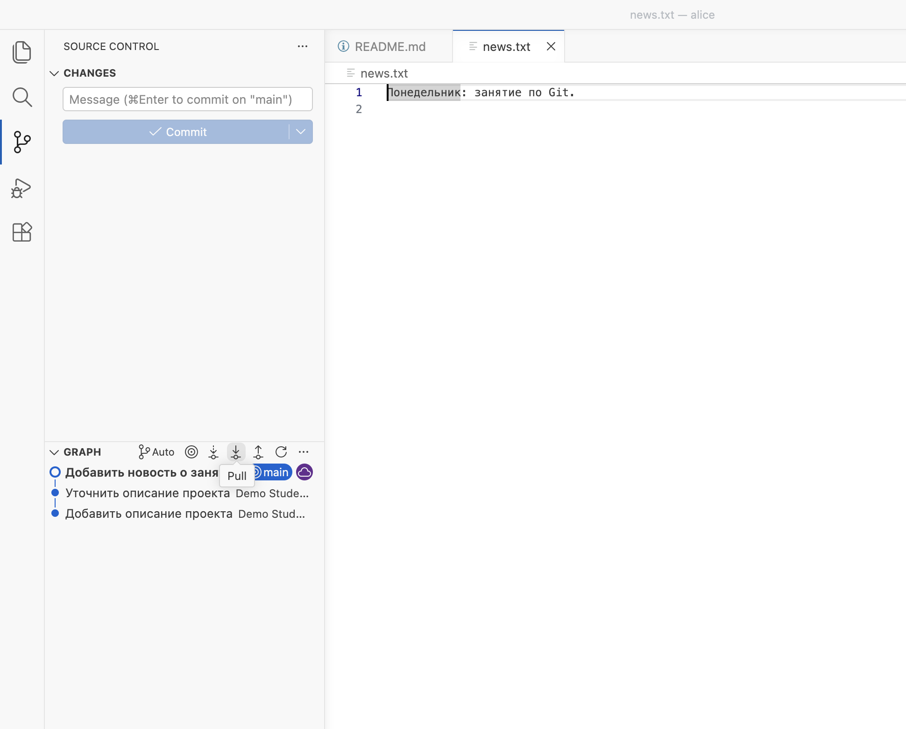
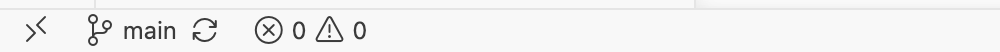
8ac8f46. Совпадение графа и фактического содержимого файла — две независимые проверки результата.Когда Pull не сводится к передвижению указателя
Если есть и ваши, и чужие новые коммиты, ветки разошлись. Способ включения истории зависит от настроек. Может потребоваться слияние, перебазирование или выбор стратегии. Возможны конфликты; здесь мы ограничиваемся линейной историей.
Локальные правки тоже могут помешать Pull, если получаемые изменения затрагивают те же файлы. При ошибке не повторяйте нажатие вслепую и не используйте force push: откройте вывод Git и разберите состояние.
Получение и отправка проверены по отдельности. Теперь выполним обмен через составное действие VS Code.
06 Sync Changes: два действия одной кнопкой
Зачем этот шаг: получить и отправить изменения, предварительно проверив направление обмена.
После Pull добавим файл faq.txt и создадим коммит bdbe3af — «Добавить вопрос о получении изменений». Ветвь main на один коммит впереди origin/main. Рабочая папка чистая: незавершённых файлов нет, но это ещё не означает, что работа отправлена.
Sync Changes — составное действие VS Code. В Git нет отдельной команды с таким именем. Оно сначала выполняет Pull для текущей ветки, а затем отправляет исходящие коммиты. Если получение завершилось ошибкой или требует разрешить конфликт, рассчитывать на завершённую отправку нельзя.
Перед нажатием проверьте три вещи: имя текущей ветки, отсутствие неожиданных локальных правок и числа у стрелок. В этом опыте ожидаем 0↓ 1↑ и upstream origin/main. Большая кнопка показывает Sync Changes с одной стрелкой вверх.
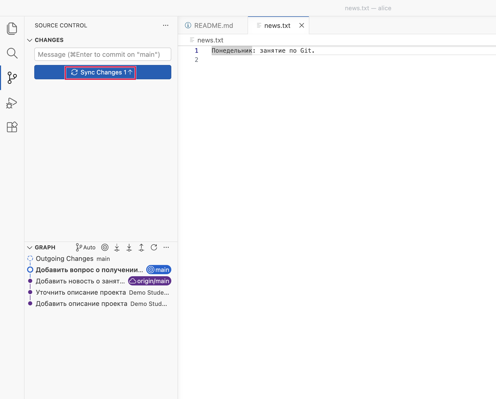
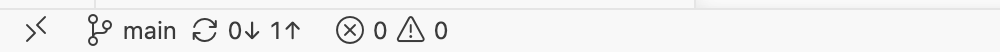
main → bdbe3af, origin/main → 8ac8f46. Перед Sync состояние проверено, но ноль входящих всё равно отражает последнее полученное знание о сервере.Нажмите Sync Changes. Если появится подтверждение, прочитайте направление обмена: VS Code прямо предупреждает о Pull и Push для origin/main. Подтвердите обычной кнопкой OK; отключать будущие предупреждения для этого опыта не требуется.
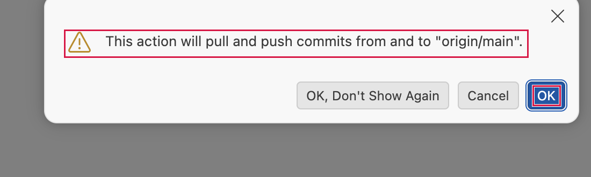
В журнале этого нажатия зафиксированы две операции, в таком порядке. Строки взяты из журнала; вводить их в терминале не требуется:
03:42:08.855 git pull --tags origin main 03:42:09.009 git push origin main:main
Pull не нашёл новых коммитов для включения, затем Push отправил bdbe3af. Число исходящих исчезло. Если коллега успел отправить изменения, первый этап Sync может их получить. При выборе отдельного Push этого этапа нет.
Сначала · pull
В remote.git: main → 8ac8f46.
Новых коммитов для нашей ветки нет. Локальная main остаётся на bdbe3af.
После · обе стороны
Локальные main и origin/main, удалённая main указывают на bdbe3af.
8ac8f46 опущена. Единственный отправленный коммит содержит faq.txt.Проверим и другую сторону Sync. Коллега сначала получил bdbe3af, затем добавил в news.txt строку «Вторник: практика по веткам» и отправил ace6723 — «Добавить второе занятие». После нашего Fetch виден 1↓ 0↑; в открытом файле пока только понедельник.
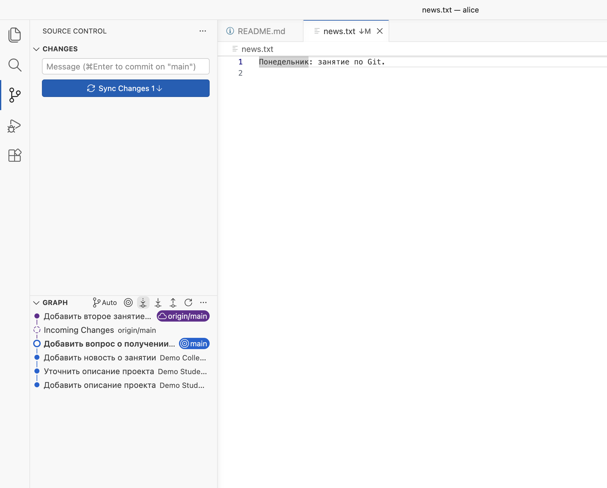
main → bdbe3af, origin/main → ace6723. Ни одного собственного исходящего коммита нет.Повторное нажатие Sync Changes включает ace6723 в нашу ветку. В этом прогоне исходящих коммитов не было, и отдельной команды Push в журнале второго нажатия нет. Отправлять нечего. После завершения в файле две строки, а счётчики исчезли.
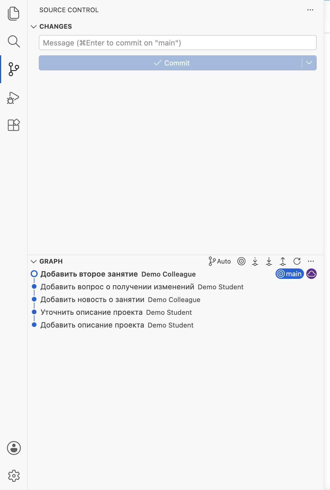

main и origin/main, а также main в remote.git указывают на ace6723. В рабочем news.txt есть обе строки.Почему перед Sync полезно отдельно выполнить Fetch
Fetch обновляет граф, и вы видите, ожидается ли только отправка, только получение или обе стороны ушли вперёд. Если одновременно есть входящие и исходящие коммиты, ветки разошлись. Такой случай требует отдельного разбора; здесь мы его не выполняем.
Отдельный Fetch не блокирует удалённый репозиторий: после него коллега всё ещё может отправить новый коммит. Поэтому результат каждой операции нужно проверять, даже если до нажатия граф был понятен.
Settings Sync в меню аккаунта — другой механизм. Он переносит настройки редактора и не заменяет обмен коммитами репозитория.
В обоих опытах Sync получен ожидаемый результат. Соберём признаки, по которым проверяют и остальные действия обмена.
07 Как проверить результат
Исчезнувшее уведомление или крутящийся значок — ещё не итог. Дождитесь завершения операции, затем сопоставьте граф, счётчики и файлы. Успешную отправку подтверждают также проверкой удалённой стороны.
| Действие | Что ожидаем после | Что не доказывает успех |
|---|---|---|
| Publish Branch | Есть upstream, удалённая ветка и тот же хеш опубликованного коммита. | Одно лишь наличие адреса origin. |
| Push | Нет исходящих коммитов; удалённая ветка содержит отправленный коммит. | Чистая рабочая папка: коммит мог остаться только локально. |
| Fetch | Сведения об удалённых ветках обновились; main и рабочие файлы не изменились. | Ожидание, что новый файл уже появится в Explorer. |
| Pull | Полученный коммит входит в текущую ветку; ожидаемые файлы и строки доступны. | Коммит виден только у origin/main, но main ещё на старом месте. |
| Sync Changes | Получение завершилось, исходящие отправлены; нет неожиданных различий с upstream на момент проверки. | Само нажатие большой кнопки без проверки сообщения об ошибке. |
Если работаете с GitHub, после Push откройте нужный репозиторий и нужную ветку в браузере, обновите страницу и найдите сообщение и короткий хеш последнего коммита. Откройте изменённый файл: опубликованная версия должна содержать строки из отправленного коммита. Эта проверка относится к GitHub; кадры стенда выше её не подменяют.
Если что-то не сошлось, откройте палитру → Git: Show Git Output. Журнал показывает конкретную команду и ответ Git. Ошибка доступа, отклонённый Push и требование разрешить конфликт — разные ситуации. Ни для одной из них не нужно сразу выбирать Force Push.
Протокол опыта: хеши и состояния
В таблице — устойчивые состояния последовательного опыта. Содержимое каждой ячейки — короткий хеш коммита на вершине соответствующей ветки. В истории все пять коммитов идут по одной линии.
| После действия | main в alice | origin/main в alice | main в remote.git |
|---|---|---|---|
| Первая публикация | 45613e9 | 45613e9 | 45613e9 |
| Наш второй коммит | ed46543 | 45613e9 | 45613e9 |
| Push | ed46543 | ed46543 | ed46543 |
| Коллега отправил новость | ed46543 | ed46543 | 8ac8f46 |
| Fetch | ed46543 | 8ac8f46 | 8ac8f46 |
| Pull | 8ac8f46 | 8ac8f46 | 8ac8f46 |
| Наш коммит с faq.txt | bdbe3af | 8ac8f46 | 8ac8f46 |
| Первый Sync | bdbe3af | bdbe3af | bdbe3af |
| Коллега дополнил новость; наш Fetch | bdbe3af | ace6723 | ace6723 |
| Второй Sync | ace6723 | ace6723 | ace6723 |
Машинные замеры: experiment.json. Часть замеров сделана непосредственно после нажатия, пока VS Code ещё обновлял индекс или ссылки; они отмечены как переходные. Окончательные результаты подтверждены дальнейшими состояниями и выборкой реальных операций из журнала VS Code. Хеши при повторении опыта будут другими.
Те же признаки используйте в самостоятельной работе: сравнивайте состояние до нажатия и после завершения операции.
08 Самостоятельная работа
Используйте собственный тренировочный репозиторий, который разрешено публиковать, и отдельную рабочую копию. Не проводите опыт с секретами, курсовой или общей веткой команды. Если нет разрешения на внешний репозиторий, последовательность ниже можно разобрать по кадрам; локальный стенд организуется отдельно.
- Проверьте remote, текущую ветку и upstream. Если ветка ещё не опубликована, выберите подходящий вариант первой публикации из раздела 2.
- Измените README, создайте один коммит. Найдите исходящий коммит в Graph, выполните отдельный Push и проверьте другую сторону.
- Во второй рабочей копии получите этот коммит, затем создайте и отправьте новый файл
news.txt. Не делайте в это время новых коммитов в первой копии. - В первой копии выполните Fetch. Убедитесь: входящий коммит виден, но
news.txtв рабочей папке ещё не появился. - Выполните Pull. Проверьте новый файл и совпадение меток веток.
- Создайте ещё один локальный коммит и выполните Sync Changes. Проверьте, что исходящих больше нет и коммит появился на другой стороне.
Проверьте понимание: четыре коротких случая
- В Source Control нет файлов, но видно 1↑. Всё уже отправлено? Нет. Рабочая папка чистая, но один коммит ещё не опубликован.
- После Fetch видно 1↓, а нового файла нет. Ошибка? Нет. Получена история, но текущая ветка ещё не включает новый коммит.
- После Push файл остался в Staged Changes. Его строка уже на другой стороне? Не обязательно. Индекс не отправляется; проверяйте содержимое коммита.
- Нужен только просмотр чужих коммитов без включения в свою ветку. Что нажать? Fetch. Он оставит текущую ветку на месте.
Итог
- Remote задаёт адрес, upstream связывает конкретную локальную ветку с отслеживаемой веткой.
- Push отправляет коммиты, не индекс и не текущие правки файлов.
- Fetch обновляет сведения об удалённых ветках; Pull дополнительно включает изменения в текущую ветку.
- Sync Changes сначала получает изменения, затем отправляет исходящие. Состояние проверяют до и после нажатия.
- Git: remote — именованные адреса удалённых репозиториев.
- Git: push — передача объектов, обновление ссылок,
--set-upstream. - Git: fetch — получение объектов и обновление remote-tracking refs.
- Git: pull — получение и включение удалённой истории в текущую ветку.
- VS Code: Source Control и Push, pull, and sync — кнопки публикации и обмена.
- Все кадры действий и хеши в схемах — собственный локальный опыт. GitHub-публикация через Publish to GitHub в этом опыте не проверялась. Команды второго клона и подготовка стенда выполнялись автором; студенту повторять их в терминале не требуется.